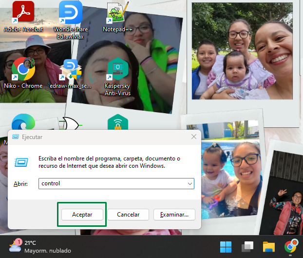
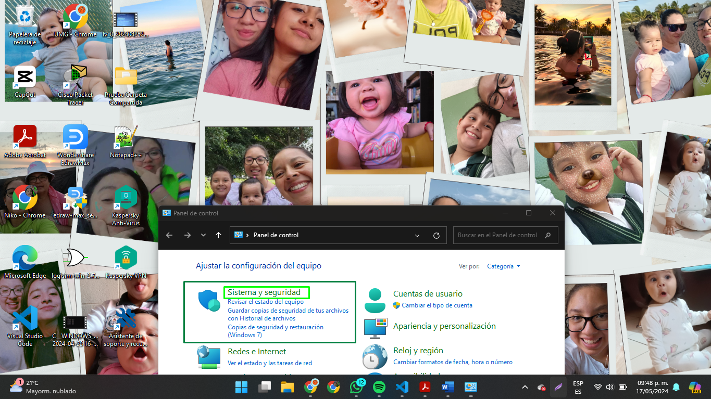
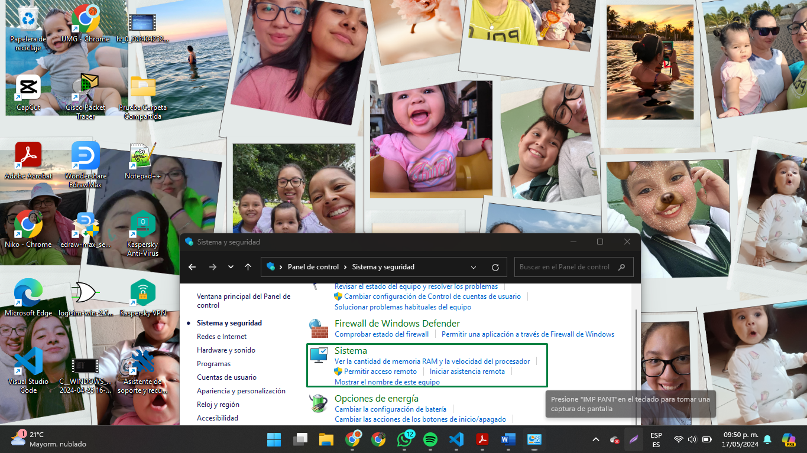

Qué es y qué utilidades tiene un grupo de trabajo de Windows
Los grupos de trabajo son una de las posibles formas de organizar los equipos dentro de una red local. Otras formas de organizar los equipos que pertenecen a una red local sonmediante un dominio o mediante un grupo de hogar.
La totalidad de equipos pertenecientes a un mismo grupo de trabajo podrán verse y comunicarse entre ellos.
Ventajas de estar en un Grupo de Trabajo:
Los equipos pertenecientes a un mismo grupo podrán compartir archivosy directorios entre ellos de forma extremadamente sencilla.
Los equipos pertenecientes a un mismo grupo podrán compartir recursoscomo por ejemplo impresoras, etc.
En ningún momento los grupos de trabajo sirven para centralizar o gestionar permisos deequipos. La administración de usuarios y privilegios se hará de forma individual en cada uno de los equipos que forman parte del grupo de trabajo. Cada uno de los equipos
pertenecientes a un grupo de trabajo tienen una relación de igual a igual entre ellos y se administran de forma local.
Los grupos de trabajo son útiles para ser usados en redes locales pequeñas. Por lo tanto, los grupos de trabajo son una buena solución para usarlos en nuestro hogar. En ambientes corporativos es más recomendable usar dominios.
Las características básicas de los equipos que forman parte de grupos de trabajo son las siguientes:
La relación entre todos los equipos de un grupo de trabajo es de igual a igual. Por lo tanto,ningún ordenador perteneciente al grupo tiene control sobre el otro.
El número de equipos que forma un grupo de trabajo acostumbra a ser bajo. Si disponemos de un grupo de trabajo con más de 20 equipos deberíamos plantearnosmigrar a un dominio.
Para que los usuarios de un grupo de trabajo puedan verse entre ellos deben encontrarseen la misma red local.
Cada equipo perteneciente al grupo de trabajo debe disponer de su cuenta de usuario local. Por lo tanto, para iniciar la sesión en un equipo perteneciente a un grupo de trabajo debemos disponer de una cuenta de usuario en este equipo.
Todos los usuarios de una red local pueden pertenecer a un grupo de trabajo sin necesidad de pedir permiso ni introducir ninguna contraseña. Por lo tanto, cuando compartimos una carpeta hay que configurar de forma adecuada los permisos y los usuarios que tendrán acceso a nuestra carpeta compartida.
Queramos o no queramos, todos los equipos con Microsoft Windows forman parte de un dominio o de un grupo de trabajo. Para conocer nuestro grupo de trabajo, o dominio, tenemos que acceder a nuestro panel de control. Para ello seguimos los siguientes pasos:
Presionamos la combinación de teclas Ctrl+R.
Cuando aparezca la ventana de ejecutar escribimos la palabra control y presionamos Enter.

Una vez dentro del panel de control, en la opción Ver Por seleccionamos la opciónCategoría. Seguidamente clicamos encima de la opción Sistema y Seguridad.

A continuación, dentro de Sistema y seguridad clicamos encima del icono Sistema.

Dentro de Sistema, tal y como se puede ver en la captura de pantalla, verán que mi grupo de trabajo es KING.